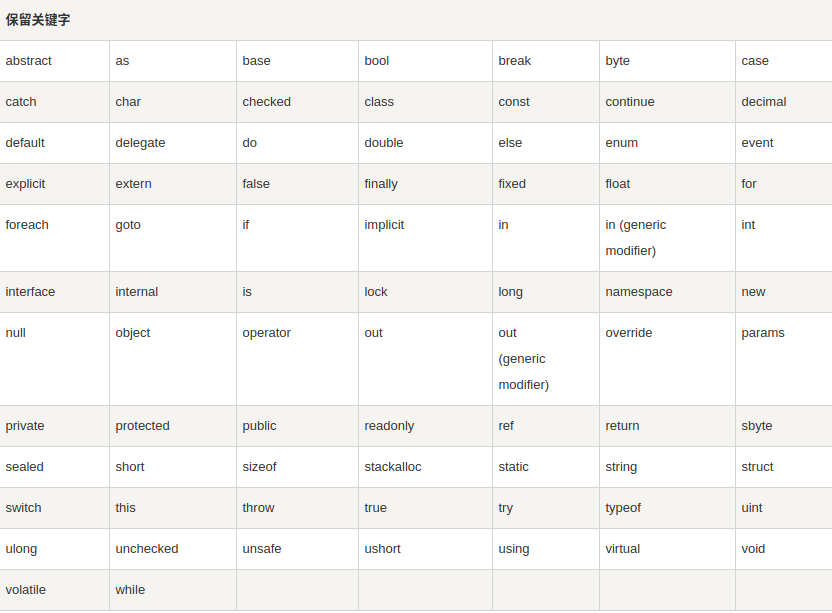
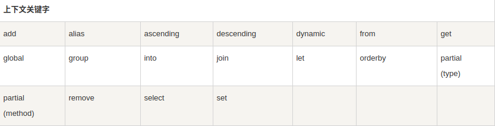
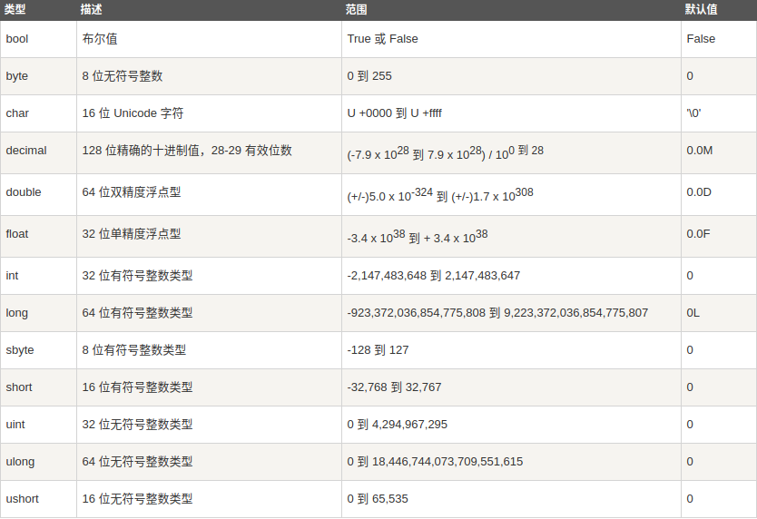

环境
在Linux上编译运行C#需要安装mono(毕竟微软家的呵)，安装方式见官网。
程序结构
一个 C# 程序主要包括以下部分：
- 命名空间声明（Namespace declaration）
- 一个 Class
- Class 方法
- Class 属性
- 一个 Main 方法
- 语句（Statements）& 表达式（Expressions）
- 注释
实例：
1 | using System; |
编译运行：
1 | // 编译生成.exe文件 |
基本语法
using关键字
using 关键字用于在程序中包含命名空间。一个程序可以包含多个 using 语句。
class关键字
class 关键字用于声明一个类。
C# 关键字
关键字是 C# 编译器预定义的保留字，如果想使用这些关键字作为标识符，可以在关键字前面加上 @ 字符作为前缀。
在 C# 中，有些关键字在代码的上下文中有特殊的意义，如 get 和 set，这些被称为上下文关键字（contextual keywords）。下表列出了 C# 中的保留关键字（Reserved Keywords）和上下文关键字（Contextual Keywords）：
 数据类型
在 C# 中，变量分为以下几种类型：
- 值类型（Value types）
- 引用类型（Reference types）
- 指针类型（Pointer types）
值类型（Value types）
值类型变量可以直接分配给一个值。它们是从类 System.ValueType 中派生的(结构体和枚举都是值类型)。
表达式 sizeof(type) 产生以字节为单位存储对象或类型的存储尺寸。
struct
1 | struct Books { |
C# 中的结构有以下特点：
- 结构可带有方法、字段、索引、属性、运算符方法和事件。
- 结构可定义构造函数，但不能定义析构函数。但是，您不能为结构定义默认的构造函数。默认的构造函数是自动定义的，且不能被改变。
- 与类不同，结构不能继承其他的结构或类。
- 结构不能作为其他结构或类的基础结构。
- 结构可实现一个或多个接口。
- 结构成员不能指定为 abstract、virtual 或 protected。
- 当使用 New 操作符创建一个结构对象时，会调用适当的构造函数来创建结构。与类不同，结构可以不使用 New 操作符即可被实例化。
- 如果不使用 New 操作符，只有在所有的字段都被初始化之后，字段才被赋值，对象才被使用。
- 类是引用类型，结构是值类型。
- 结构不支持继承。
- 结构不能声明默认的构造函数。
enum
1 | enum <enum_name> { |
- enum_name 指定枚举的类型名称。
- enumeration list 是一个用逗号分隔的标识符列表。
枚举列表中的每个符号代表一个整数值，一个比它前面的符号大的整数值。默认情况下，第一个枚举符号的值是 0.例如：
1 | using System; |
引用类型（Reference types）
引用类型不包含存储在变量中的实际数据，但它们包含对变量的引用。换句话说，它们指的是一个内存位置。使用多个变量时，引用类型可以指向一个内存位置。如果内存位置的数据是由一个变量改变的，其他变量会自动反映这种值的变化。内置的 引用类型有：object、dynamic 和 string。
对象（Object）类型
对象（Object）类型 是 C# 通用类型系统（Common Type System - CTS）中所有数据类型的终极基类。Object 是 System.Object 类的别名。所以对象（Object）类型可以被分配任何其他类型（值类型、引用类型、预定义类型或用户自定义类型）的值。但是，在分配值之前，需要先进行类型转换。
当一个值类型转换为对象类型时，则被称为 装箱；另一方面，当一个对象类型转换为值类型时，则被称为 拆箱。
1 | object obj; |
动态（Dynamic）类型
可以存储任何类型的值在动态数据类型变量中。这些变量的类型检查是在运行时发生的。声明动态类型的语法：
1 | dynamic <variable_name> = value; |
动态类型与对象类型相似，但是对象类型变量的类型检查是在编译时发生的，而动态类型变量的类型检查是在运行时发生的。
字符串（String）类型
字符串（String）类型允许您给变量分配任何字符串值。字符串（String）类型是 System.String 类的别名。它是从对象（Object）类型派生的。字符串（String）类型的值可以通过两种形式进行分配：引号和@引号(称作”逐字字符串”，将转义字符\当作普通字符对待)。
1 | string str = @"C:\Windows"; |
指针类型（Pointer types）
指针类型变量存储另一种类型的内存地址。C# 中的指针与 C 或 C++ 中的指针有相同的功能。声明指针类型的语法：
1 | type* identifier; |
类型转换
- 隐式类型转换:这些转换是 C# 默认的以安全方式进行的转换, 不会导致数据丢失。例如，从小的整数类型转换为大的整数类型，从派生类转换为基类。
- 显式类型转换:显式类型转换(方法：(type)value)，即强制类型转换。显式转换需要强制转换运算符，而且强制转换会造成数据丢失。
C#提供了下列内置的类型转换方法：
| 方法 | 描述 |
|---|---|
| ToBoolean | 如果可能的话，把类型转换为布尔型。 |
| ToByte | 把类型转换为字节类型。 |
| ToChar | 如果可能的话，把类型转换为单个 Unicode 字符类型。 |
| ToDateTime | 把类型（整数或字符串类型）转换为 日期-时间 结构。 |
| ToDecimal | 把浮点型或整数类型转换为十进制类型。 |
| ToDouble | 把类型转换为双精度浮点型。 |
| ToInt16 | 把类型转换为 16 位整数类型。 |
| ToInt32 | 把类型转换为 32 位整数类型。 |
| ToInt64 | 把类型转换为 64 位整数类型。 |
| ToSbyte | 把类型转换为有符号字节类型。 |
| ToSingle | 把类型转换为小浮点数类型。 |
| ToString | 把类型转换为字符串类型。 |
| ToType | 把类型转换为指定类型。 |
| ToUInt16 | 把类型转换为 16 位无符号整数类型。 |
| ToUInt32 | 把类型转换为 32 位无符号整数类型。 |
| ToUInt64 | 把类型转换为 64 位无符号整数类型。 |
变量和常量
变量
变量定义的语法：
1 | <data_type> <variable_list>; |
常量
整数常量
整数常量可以是十进制、八进制或十六进制的常量。
- 前缀：指定基数，0x 或 0X 表示十六进制，0 表示八进制，没有前缀则表示十进制。
- 后缀：可以是 U 和 L 的组合，其中，U 和 L 分别表示 unsigned 和 long。后缀可以是大写或者小写，多个后缀以任意顺序进行组合。
1 | 212 /* 合法 */ |
浮点常量
一个浮点常量是由整数部分、小数点、小数部分和指数部分组成。可以使用小数形式或者指数形式来表示浮点常量。
1 | 3.14159 /* 合法 */ |
使用小数形式表示时，必须包含小数点、指数或同时包含两者。使用指数形式表示时，必须包含整数部分、小数部分或同时包含两者。有符号的指数是用 e 或 E 表示的。
字符常量
字符常量括在单引号里.
字符串常量
字符串常量是括在双引号 “” 里，或者是括在 @”” 里。字符串常量包含的字符与字符常量相似，可以是：普通字符、转义序列和通用字符.
定义常量
常量是使用 const 关键字来定义的 。定义一个常量的语法如下：
1 | const <data_type> <constant_name> = value; |
Console
System 命名空间中的 Console 类提供了一个函数 ReadLine()，用于接收来自用户的输入，并把它存储到一个变量中。提供了WriteLine()方法用于输出至控制台。
1 | int num; |
函数 Convert.ToInt32() 把用户输入的数据转换为 int 数据类型，因为 Console.ReadLine() 只接受字符串格式的数据。
集合（Collection）
| 类 | 描述和用法 |
|---|---|
| 动态数组（ArrayList） | 它代表了可被单独索引的对象的有序集合。 它基本上可以替代一个数组。但是，与数组不同的是，您可以使用索引在指定的位置添加和移除项目，动态数组会自动重新调整它的大小。它也允许在列表中进行动态内存分配、增加、搜索、排序各项。 |
| 哈希表（Hashtable） | 它使用键来访问集合中的元素。 当使用键访问元素时，则使用哈希表，而且您可以识别一个有用的键值。哈希表中的每一项都有一个键/值对。键用于访问集合中的项目。 |
| 排序列表（SortedList） | 它可以使用键和索引来访问列表中的项。 排序列表是数组和哈希表的组合。它包含一个可使用键或索引访问各项的列表。如果您使用索引访问各项，则它是一个动态数组（ArrayList），如果您使用键访问各项，则它是一个哈希表（Hashtable）。集合中的各项总是按键值排序。 |
| 堆栈（Stack） | 它代表了一个后进先出的对象集合。 当需要对各项进行后进先出的访问时，则使用堆栈。当您在列表中添加一项，称为推入元素，当您从列表中移除一项时，称为弹出元素。 |
| 队列（Queue） | 它代表了一个先进先出的对象集合。 当需要对各项进行先进先出的访问时，则使用队列。当您在列表中添加一项，称为入队，当您从列表中移除一项时，称为出队。 |
| 点阵列（BitArray） | 它代表了一个使用值 1 和 0 来表示的二进制数组。 当需要存储位，但是事先不知道位数时，则使用点阵列。您可以使用整型索引从点阵列集合中访问各项，索引从零开始。 |
运算符
运算符大多和Java类似，以下举出几个不一样的：
| 运算符 | 描述 | 实例 |
|---|---|---|
| sizeof() | 返回数据类型的大小。 | sizeof(int)，将返回 4. |
| typeof() | 返回 class 的类型。 | typeof(StreamReader); |
| & | 返回变量的地址。 | &a; 将得到变量的实际地址。 |
| * | 变量的指针。 | *a; 将指向一个变量。 |
| is | 判断对象是否为某一类型。 | if( Ford is Car) // 检查 Ford 是否是 Car 类的一个对象。 |
| as | 强制转换，即使转换失败也不会抛出异常。 | Object obj = new StringReader(“Hello”); |
| StringReader r = obj as StringReader; |
流程控制
| 语句 | 描述 |
|---|---|
| if 语句 | 一个 if 语句 由一个布尔表达式后跟一个或多个语句组成。 |
| if…else 语句 | 一个 if 语句 后可跟一个可选的 else 语句，else 语句在布尔表达式为假时执行。 |
| switch 语句 一个 | switch 语句允许测试一个变量等于多个值时的情况。 |
| ? : | 三元判断运算符 |
| while 循环 | 当给定条件为真时，重复语句或语句组。它会在执行循环主体之前测试条件。 |
| for/foreach 循环 | 多次执行一个语句序列，简化管理循环变量的代码。(如：foreach (int i in array)) |
| do…while 循环 | 除了它是在循环主体结尾测试条件外，其他与 while 语句类似。 |
可空类型（Nullable）
C# 提供了一个特殊的数据类型: Nullable 类型（可空类型），可空类型可以表示其基础值类型正常范围内的值，再加上一个 null 值。
在处理数据库和其他包含可能未赋值的元素的数据类型时，将 null 赋值给数值类型或布尔型的功能特别有用。例如，数据库中的布尔型字段可以存储值 true 或 false，或者，该字段也可以未定义。声明一个 nullable 类型（可空类型）的语法如下：
1 | < data_type> ? <variable_name> = null; |
实例:
1 | using System; |
Null 合并运算符（??）
Null 合并运算符用于定义可空类型和引用类型的默认值。Null 合并运算符为类型转换定义了一个预设值，以防可空类型的值为 Null。Null 合并运算符把操作数类型隐式转换为另一个可空（或不可空）的值类型的操作数的类型。如果第一个操作数的值为 null，则运算符返回第二个操作数的值，否则返回第一个操作数的值。下面的实例演示了这点：
1 | using System; |
访问修饰符
一个 访问修饰符 定义了一个类成员的范围和可见性。C# 支持的访问修饰符如下所示：
- public：所有对象都可以访问；
- private：对象本身在对象内部可以访问；
- protected：只有该类对象及其子类对象可以访问
- internal：同一个程序集的对象可以访问；
- protected internal：访问限于当前程序集或派生自包含类的类型。
类的默认访问标识符是 internal，成员的默认访问标识符是 private。
public 访问修饰符
public 访问修饰符允许一个类将其成员变量和成员函数暴露给其他的函数和对象。任何公有成员可以被外部的类访问。
private 访问修饰符
private 访问修饰符允许一个类将其成员变量和成员函数对其他的函数和对象进行隐藏。只有同一个类中的函数可以访问它的私有成员。即使是类的实例也不能访问它的私有成员。
protected 访问修饰符
protected 访问修饰符允许子类访问它的基类的成员变量和成员函数。这样有助于实现继承。
internal 访问修饰符
internal 访问修饰符允许一个类将其成员变量和成员函数暴露给当前程序中的其他函数和对象。换句话说，带有 internal 访问修饰符的任何成员可以被定义在该成员所定义的应用程序内的任何类或方法访问。
protected internal 访问修饰符
protected internal 访问修饰符允许在本类,派生类或者包含该类的程序集中访问。这也被用于实现继承。
class
析构函数不能继承或重载。
继承
C#不支持多重继承，同Java一样也需要接口来实现，继承语法：
1 | <访问修饰符符> class <基类> { |
父类对象应在子类对象创建之前被创建，可以在成员初始化列表中进行父类的初始化(base类似于Java中的super)：
1 | class Rectangle { |
多态
在面向对象编程范式中，多态性往往表现为”一个接口，多个功能“。
- 静态多态性中，函数的响应是在编译时发生的;
- 动态多态性中，函数的响应是在运行时发生的。
静态多态性
在编译时，函数和对象的连接机制被称为早期绑定，也被称为静态绑定。C# 提供了两种技术来实现静态多态性。分别为：
- 函数重载
- 运算符重载
动态多态性
动态多态性是通过 抽象类 和 虚方法 实现的。
C# 允许使用关键字 abstract 创建抽象类，用于提供接口的部分类的实现。当一个派生类继承自该抽象类时，实现即完成。抽象类包含抽象方法，抽象方法可被派生类实现。派生类具有更专业的功能。下面是有关抽象类的一些规则：
- 不能创建一个抽象类的实例。
- 不能在一个抽象类外部声明一个抽象方法。
- 通过在类定义前面放置关键字 sealed，可以将类声明为密封类。当一个类被声明为 sealed 时，它不能被继承。抽象类不能被声明为 sealed。
实例：
1 | using System; |
当有一个定义在类中的函数需要在继承类中实现时，可以使用虚方法。虚方法是使用关键字 virtual 声明的。虚方法可以在不同的继承类中有不同的实现。对虚方法的调用是在运行时发生的。
1 | using System; |
注意：override重写的属性必须是virtual、abstract或override。
interface
类似于Java。
namespace
在一个命名空间中声明的类的名称与另一个命名空间中声明的相同的类的名称不冲突。
1 | namespace namespace_name { |
可通过namespace_name.item_name方式调用命名空间中的item。使用 using 命名空间指令，这样在使用的时候就不用在前面加上命名空间名称。
预处理器指令
预处理器指令指导编译器在实际编译开始之前对信息进行预处理。
所有的预处理器指令都是以 # 开始。且在一行上，只有空白字符可以出现在预处理器指令之前。预处理器指令不是语句，所以它们不以分号（;）结束。
C# 编译器没有一个单独的预处理器，但是，指令被处理时就像是有一个单独的预处理器一样。在 C# 中，预处理器指令用于在条件编译中起作用。与 C 和 C++ 不同的是，它们不是用来创建宏。一个预处理器指令必须是该行上的唯一指令。
| 预处理器指令 | 描述 |
|---|---|
| #define | 它用于定义一系列成为符号的字符。 |
| #undef | 它用于取消定义符号。 |
| #if | 它用于测试符号是否为真。 |
| #else | 它用于创建复合条件指令，与 #if 一起使用。 |
| #elif | 它用于创建复合条件指令。 |
| #endif | 指定一个条件指令的结束。 |
| #line | 它可以让您修改编译器的行数以及（可选地）输出错误和警告的文件名。 |
| #error | 它允许从代码的指定位置生成一个错误。 |
| #warning | 它允许从代码的指定位置生成一级警告。 |
| #region | 它可以让您在使用 Visual Studio Code Editor 的大纲特性时，指定一个可展开或折叠的代码块。 |
| #endregion | 它标识着 #region 块的结束。 |
异常处理
- try：一个 try 块标识了一个将被激活的特定的异常的代码块。后跟一个或多个 catch 块。
- catch：程序通过异常处理程序捕获异常。catch 关键字表示异常的捕获。
- finally：finally 块用于执行给定的语句，不管异常是否被抛出都会执行。例如，如果您打开一个文件，不管是否出现异常文件都要被关闭。
- throw：当问题出现时，程序抛出一个异常。使用 throw 关键字来完成。
C# 中的异常类主要是直接或间接地派生于 System.Exception 类。System.ApplicationException 和 System.SystemException 类是派生于 System.Exception 类的异常类。
- System.ApplicationException 类支持由应用程序生成的异常。所以程序员定义的异常都应派生自该类。
- System.SystemException 类是所有预定义的系统异常的基类。
反射（Reflection）
委托（Delegate）
委托是存有对某个方法的引用的一种引用类型变量。引用可在运行时被改变。委托特别用于实现事件和回调方法。所有的委托都派生自 System.Delegate 类。
声明委托
1 | delegate <return type> <delegate-name> <parameter list> |
实例化委托
1 | public delegate void printString(string s); |
委托的多播
委托对象可使用 “+” 运算符进行合并。一个合并委托调用它所合并的两个委托。只有相同类型的委托可被合并。”-“ 运算符可用于从合并的委托中移除组件委托。
使用委托的这个有用的特点，可以创建一个委托被调用时要调用的方法的调用列表。这被称为委托的 多播（multicasting），也叫组播。
1 | using System; |
事件（Event）
- 发布器（publisher） 是一个包含事件和委托定义的对象。事件和委托之间的联系也定义在这个对象中。发布器（publisher）类的对象调用这个事件，并通知其他的对象。
- 订阅器（subscriber） 是一个接受事件并提供事件处理程序的对象。在发布器（publisher）类中的委托调用订阅器（subscriber）类中的方法（事件处理程序）。
声明事件
在类的内部声明事件，首先必须声明该事件的委托类型。例如：
1 | public delegate void BoilerLogHandler(string status); |
然后，声明事件本身，使用 event 关键字：
1 | // 基于上面的委托定义事件 |
上面的代码定义了一个名为 BoilerLogHandler 的委托和一个名为 BoilerEventLog 的事件，该事件在生成的时候会调用委托。
实例
1 | using System; |
泛型（Generic）
使用泛型是一种增强程序功能的技术，具体表现在以下几个方面：
- 它有助于最大限度地重用代码、保护类型的安全以及提高性能。
- 可以创建泛型集合类。.NET 框架类库在 System.Collections.Generic 命名空间中包含了一些新的泛型集合类。可以使用这些泛型集合类来替代 System.Collections 中的集合类。
- 可以创建自己的泛型接口、泛型类、泛型方法、泛型事件和泛型委托。
- 可以对泛型类进行约束以访问特定数据类型的方法。
- 关于泛型数据类型中使用的类型的信息可在运行时通过使用反射获取。
泛型类
1 | using System; |
泛型方法
1 | using System; |
泛型委托
可以通过类型参数定义泛型委托。例如：
1 | delegate T NumberChanger<T>(T n); |
1 | using System; |
Lambda表达式
1、表达式Lambda
表达式位于 => 运算符右侧的 lambda 表达式称为“表达式 lambda”。 表达式 lambda 会返回表达式的结果，并采用以下基本形式：
1 | (input parameters) => expression |
仅当 lambda 只有一个输入参数时，括号才是可选的；否则括号是必需的。括号内的两个或更多输入参数使用逗号加以分隔；有时，编译器难以或无法推断输入类型，如果出现这种情况，可以按以下示例中所示方式显式指定类型：
1 | (int x, string s) => s.Length > x |
使用空括号指定零个输入参数：
1 | () => SomeMethod() |
2、语句Lambda
当lambda表达式中，有多个语句时，写成如下形式：
1 | (input parameters) => {statement;} |
例如：
1 | delegate void TestDelegate(string s); |
线程
Thread类
Thread类的常用属性：
| 属性 | 描述 |
|---|---|
| CurrentContext | 获取线程正在其中执行的当前上下文。 |
| CurrentCulture | 获取或设置当前线程的区域性。 |
| CurrentPrinciple | 获取或设置线程的当前负责人（对基于角色的安全性而言）。 |
| CurrentThread | 获取当前正在运行的线程。 |
| CurrentUICulture | 获取或设置资源管理器使用的当前区域性以便在运行时查找区域性特定的资源。 |
| ExecutionContext | 获取一个 ExecutionContext 对象，该对象包含有关当前线程的各种上下文的信息。 |
| IsAlive | 获取一个值，该值指示当前线程的执行状态。 |
| IsBackground | 获取或设置一个值，该值指示某个线程是否为后台线程。 |
| IsThreadPoolThread | 获取一个值，该值指示线程是否属于托管线程池。 |
| ManagedThreadId | 获取当前托管线程的唯一标识符。 |
| Name | 获取或设置线程的名称。 |
| Priority | 获取或设置一个值，该值指示线程的调度优先级。 |
| ThreadState | 获取一个值，该值包含当前线程的状态。 |
Thread类的常用方法：
| 序号 | 方法名 & 描述 |
|---|---|
| 1 | public void Abort() 在调用此方法的线程上引发 ThreadAbortException，以开始终止此线程的过程。调用此方法通常会终止线程。 |
| 2 | public static LocalDataStoreSlot AllocateDataSlot() 在所有的线程上分配未命名的数据槽。为了获得更好的性能，请改用以 ThreadStaticAttribute 属性标记的字段。 |
| 3 | public static LocalDataStoreSlot AllocateNamedDataSlot( string name) 在所有线程上分配已命名的数据槽。为了获得更好的性能，请改用以 ThreadStaticAttribute 属性标记的字段。 |
| 4 | public static void BeginCriticalRegion() 通知主机执行将要进入一个代码区域，在该代码区域内线程中止或未经处理的异常的影响可能会危害应用程序域中的其他任务。 |
| 5 | public static void BeginThreadAffinity() 通知主机托管代码将要执行依赖于当前物理操作系统线程的标识的指令。 |
| 6 | public static void EndCriticalRegion() 通知主机执行将要进入一个代码区域，在该代码区域内线程中止或未经处理的异常仅影响当前任务。 |
| 7 | public static void EndThreadAffinity() 通知主机托管代码已执行完依赖于当前物理操作系统线程的标识的指令。 |
| 8 | public static void FreeNamedDataSlot(string name) 为进程中的所有线程消除名称与槽之间的关联。为了获得更好的性能，请改用以 ThreadStaticAttribute 属性标记的字段。 |
| 9 | public static Object GetData( LocalDataStoreSlot slot ) 在当前线程的当前域中从当前线程上指定的槽中检索值。为了获得更好的性能，请改用以 ThreadStaticAttribute 属性标记的字段。 |
| 10 | public static AppDomain GetDomain() 返回当前线程正在其中运行的当前域。 |
| 11 | public static AppDomain GetDomainID() 返回唯一的应用程序域标识符。 |
| 12 | public static LocalDataStoreSlot GetNamedDataSlot( string name ) 查找已命名的数据槽。为了获得更好的性能，请改用以 ThreadStaticAttribute 属性标记的字段。 |
| 13 | public void Interrupt() 中断处于 WaitSleepJoin 线程状态的线程。 |
| 14 | public void Join() 在继续执行标准的 COM 和 SendMessage 消息泵处理期间，阻塞调用线程，直到某个线程终止为止。此方法有不同的重载形式。 |
| 15 | public static void MemoryBarrier() 按如下方式同步内存存取：执行当前线程的处理器在对指令重新排序时，不能采用先执行 MemoryBarrier 调用之后的内存存取，再执行 MemoryBarrier 调用之前的内存存取的方式。 |
| 16 | public static void ResetAbort() 取消为当前线程请求的 Abort。 |
| 17 | public static void SetData( LocalDataStoreSlot slot, Object data ) 在当前正在运行的线程上为此线程的当前域在指定槽中设置数据。为了获得更好的性能，请改用以 ThreadStaticAttribute 属性标记的字段。 |
| 18 | public void Start() 开始一个线程。 |
| 19 | public static void Sleep( int millisecondsTimeout ) 让线程暂停一段时间。 |
| 20 | public static void SpinWait( int iterations ) 导致线程等待由 iterations 参数定义的时间量。 |
| 21 | public static byte VolatileRead( ref byte address ) public static double VolatileRead( ref double address ) public static int VolatileRead( ref int address ) public static Object VolatileRead( ref Object address ) 读取字段值。无论处理器的数目或处理器缓存的状态如何，该值都是由计算机的任何处理器写入的最新值。此方法有不同的重载形式。这里只给出了一些形式。 |
| 22 | public static void VolatileWrite( ref byte address, byte value ) public static void VolatileWrite( ref double address, double value ) public static void VolatileWrite( ref int address, int value ) public static void VolatileWrite( ref Object address, Object value ) 立即向字段写入一个值，以使该值对计算机中的所有处理器都可见。此方法有不同的重载形式。这里只给出了一些形式。 |
| 23 | public static bool Yield() 导致调用线程执行准备好在当前处理器上运行的另一个线程。由操作系统选择要执行的线程。 |
创建线程
1 | using System; |
管理线程
1 | using System; |
销毁线程
Abort() 方法用于销毁线程。通过抛出 ThreadAbortException 在运行时中止线程。这个异常不能被捕获，如果有 finally 块，控制会被送至 finally 块。
1 | using System; |